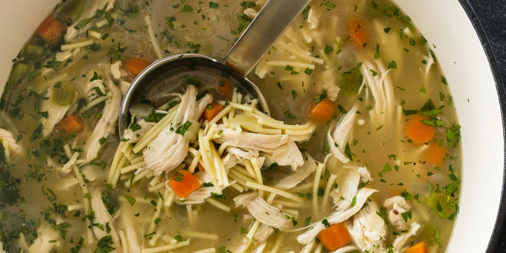

A Divine Chicken Soup
You are about to taste world class chicken soup. This soup will make want to come back for seconds because of its great taste, enjoy!

Ingredients
- 1½ pounds bone-in chicken breasts and/or thighs, trimmed
- Salt and pepper
- 1 tablespoon vegetable oil
- 8 cups chicken broth
- 1 onion, chopped
- 1 carrot, peel and cut into 1/2-inch pieces
- 1 celery rib, cut into 1/2-inch pieces
- 2 springs fresh thyme
- 1 bay leaf
- 5 ounces spaghetti, broken into 1-inch pieces (1½ cups)
- 1 tablespoon fresh parsley, minced
Preparation
- Pat chicken dry with paper towels and sprinkle with 1/4 teaspoon salt and 1/4 teaspoon pepper. Heat oil in a Dutch oven over medium-high heat until simmering. Cook the chicken until well-browned all over, 8 to 10 minutes.
- Add broth, onion, carrot, celery, thyme sprigs, bay leaf and 1/4 teaspoon salt, scraping up any browned bits. Bring to a boil, cover and reduce heat to low. Simmer until breasts register 160 degrees and/or thighs register at least 175 degrees, 14 to 17 minutes.
- Remove pot from heat; discard thyme sprigs and bay leaf. Transfer chicken to a plate and let cool slightly. Using two forks, shred chicken into bite-sized pieces, then discard skin and bones.
- Return soup to boil over medium-high heat and add pasta. Cook, uncovered, until pasta is tender, 9 to 11 minutes, stirring often.
- Add chicken and parsley and cook until chicken is warmed through, about 2 minutes. Season with salt and pepper to taste. Serve.